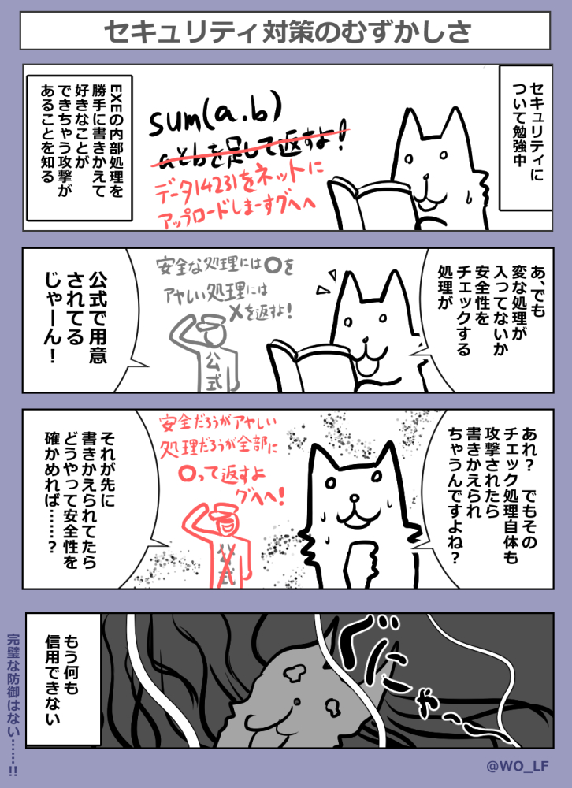

■2024-03-30 (土) ウディタのセキュリティ更新作業中！▼
◆ウディタのセキュリティ強化作業！
この2週間はウディタのセキュリティ周りの強化作業をやっていました。
でもまだ最新版ウディタには入っていません！
暗号化まわりの検証が大変でもう少しかかりそうです！
ちなみにセキュリティ強化といっても、外から見える使い勝手は
ほぼこれまで通りで、ファイル周りやプロ版のセキュリティが
従来より強化されるのが主だと思います。
実装されても、普通にゲームに触れるユーザーの方には
おそらくほとんど影響はありませんし、ゲーム開発者の方も
いつも通りにしてくださっていれば問題ないと思います。
↓セキュリティ対策初心者が体験したこと4コママンガ

ちなみにここで述べられている問題への対策もちゃんとあってセキュリティは奥が深いです。
【ウディタ どこのセキュリティが上がるの？】
今回はファイル周りの解析難易度が前より上がるというのが大きな点です。
とか言ってると秒で解析されたりすることもあるから困ります。
的確な防御方法が分からないと何やっても一瞬で解析されちゃうんですよ！
そうでなくても、セキュリティにおいて究極的なことを言うと、
ローカルファイルとして存在するEXEは達人が一個一個処理を
ほどいていくと全ての処理が解析されてしまったり、
途中のデータの中味も見られるので、完全な防衛というのはできません。
たとえばEditor側の暗号化処理を1個ずつ解析していったら、
何をどうしてるかが全部見えちゃいますし！
他にも、PC上なら通常では見られないあんな情報や
こんな情報を見ることだって簡単ですし、もっとひどいこともできます。
できる人は何でも破れますが、「手間がかかるからやらない」とか
「やる価値が薄いからやらない」というだけで
見逃されていることが多いのがこの世界なのです。
しかしそれでも、これまでパズルゲーム程度の解析難易度だったのが、
私の脳内当てクイズになる程度には解析が難しくなるはずです。
ひとまずは「初級の攻撃テクニックは一通りふさがれてるかもなー、
調べるのちょっと面倒臭そう」と思うくらいのレベルにするのが今回の目標です。
まだ抜けてたら今後も随時強化されていきます。
【ウディタ利用者側としては何が変わるの？ 起動時の変化】
まだ公開はされていませんが、
最新版予定のVer3.310の暗号化処理を使うと、Game.exe起動時に
全ての.wolfファイル（暗号化フォルダ）を読み込んでから起動するようになります！
前々から軽量な.wolfファイルはそうするようにしてましたが、
今度からは最新暗号化を使うと全部読込になります。
これはセキュリティ上の処理の都合です。
ゲーム中はファイルが常にメモリから読み込まれるようになるので
ファイル読込は高速になるのですが、一方で全wolfファイル分だけ
追加のメモリを消費するようになるので、あまりに重い動画の
フォルダなどがある場合は暗号化から外してくださった方が
いい場合もあるかもしれません。あるいは古いバージョンの暗号化にするかです。
数百MBくらいのゲームだったら何も影響ないといいますか
利点の方が大きいと思いますが、数GBにおよぶゲームを作られている方はご注意ください。
【ウディタ利用者側としては何が変わるの？(プロ版) 初期ローディング画像】
プロ版専用機能である初期ローディング画像がBasicdataフォルダ内または
Data直下にない場合、ローディング画像の読み込みタイミングが
これまでよりも少しだけ遅くなると思います。
最新の暗号化では開始時の処理が、
「最初にBasicdataだけ読み込んであとは順次読んでいく、
読んでないファイルは出せない」という形に変わるので、
Basicdataに画像が入ってると一番早く表示できるわけですね。
そのあたりはエディタの画面にも追記しておきますので、
Ver3.310が公開されたら、必要なら
『ゲーム基本設定[Pro版]』よりファイルの場所の移動をお願いします。
と、表面に出てくる変化としてはこんな感じの作業を2週間かけて行っておりました！
そして今も引き続き作業中ですが、少し時間をかけすぎて
作業費の赤字が拡大しているので急ぎながらでやっていきます！
しかし、誰にも知られず平和を守るために戦っている人たちの気分って
こんな感じなのかもしれません。
セキュリティという用途上、やったことの詳しいことがあまり話せない！
セキュリティ対策もこれはこれで、やってみると
すごいクリエイティブな仕事ではあるんですけどね！
成果を表に出しにくいこういった仕事は、創作マンとしては
「グオオつらいぃぃ！」って感じになるので早めに仕上げて次に行きたいです！
がんばっていきますよ！
2024-03-30 (土)  カテゴリ: ウディタ
カテゴリ: ウディタ
 カテゴリ: ウディタ
カテゴリ: ウディタ